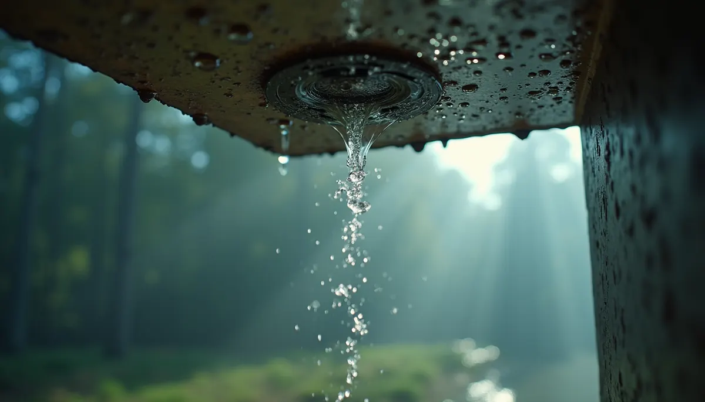
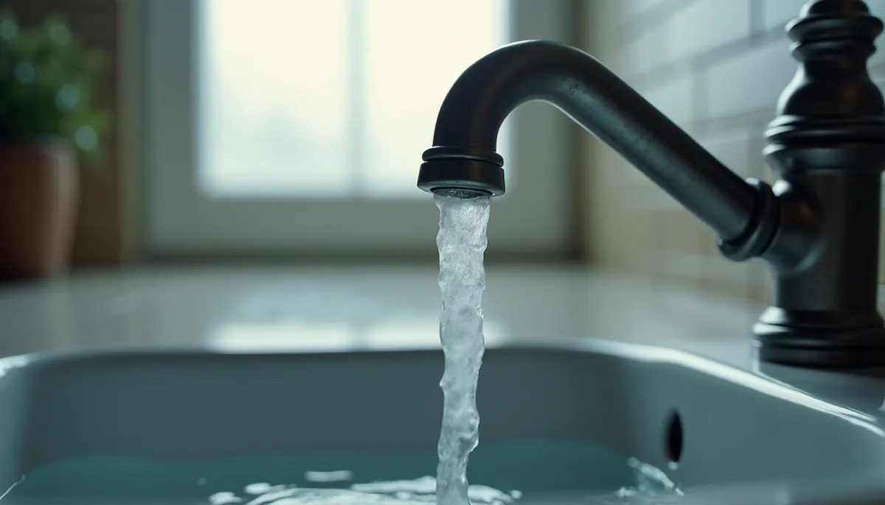

As a homeowner, ensuring your space is both comfortable and functional is a top priority. One vital aspect of your home’s infrastructure is its plumbing system. Over time, pipes can wear out, leading to various issues that affect both safety and water quality. If you find yourself asking, "How do I know if my home needs repiping?" you’re in the right place. Here are the top signs that your home might secretly require this essential process.
1. Frequent Leaks
Frequent leaks can be a significant warning sign. If you notice small leaks regularly, it is often a sign of corroded or weakened pipes that need attention. Keep an eye out for:
- Water stains on walls or ceilings
- Pooling water in your basement, crawlspace or around the foundation
- Damp spots on floors or carpets that suggest moisture buildup
Addressing these repairs can add up quickly. In fact, homeowners can spend thousands of dollars annually on leak repairs alone. Ignoring these signs may lead to structural damage or costly renovations down the line.

2. Low Water Pressure
A sudden drop in water pressure is more than just an inconvenience; it could indicate broader plumbing issues. Common causes include:
- Buildup of sediment or mineral deposits in pipes
- Rust in older plumbing systems
If some faucets run well while others barely trickle, it’s likely that your pipes are blocked or deteriorating. You may experience an average water pressure loss of around 20 to 40 percent, making daily tasks more challenging. Consulting a plumbing expert like Angle Stop Plumbing for a professional assessment can help identify the problem.

3. Discolored or Odorous Water
If you notice your tap water is discolored or emits an unpleasant odor, it's a red flag. Rusty or brown-tinted water is often a sign of corrosion in your pipes. Additionally, strange smells might indicate bacteria or biofilm buildup. This not only affects your water experience but may also pose health risks.
In fact, studies show that a significant percentage of homeowners (about 20%) have reported water quality issues that stem from deteriorating plumbing. Prioritize safe drinking water; if issues persist, consider a complete plumbing inspection by Angle Stop Plumbing.
4. Constantly Running Water
If you can hear running water when no faucets are turned on, it's crucial to investigate further. A running toilet, for example, can waste as much as 200 gallons of water per day, significantly increasing your water bill. This issue often signifies leaks in the plumbing system that should be fixed immediately to prevent further damage.
5. Age of Your Plumbing System
The age of your plumbing system plays a critical role in its effectiveness. Homes built before the 1970s often use older materials, such as lead or galvanized steel, which may no longer be safe or functional. If your home is older and you haven't updated the plumbing in years, it may be time to consider repiping. Homes that are over 50 years old have a higher likelihood of plumbing problems.
6. Unusual Sounds
Strange noises from your plumbing, such as banging or clanking, can indicate issues like "water hammer", which happens when water suddenly changes direction in the pipes. This could suggest loose or deteriorating pipes that are in need of replacement. In many cases, a professional like Angle Stop Plumbing should evaluate these noises carefully to determine if your plumbing system requires repiping.
7. Water Quality Concerns
Beyond discoloration, pay attention to any unusual tastes or the presence of sediment in your water. These issues are strong indicators that your pipes may be deteriorating. Access to clean, safe water is crucial for your family's health. If you notice changes in water quality, it's wise to arrange for a plumbing inspection by Angle Stop Plumbing to determine if repiping is necessary.
Final Thoughts
Recognizing the signs that your home may need repiping is vital for maintaining a safe and efficient plumbing system. From frequent leaks and low water pressure to discolored water and aging infrastructure, these indicators can guide you in determining when to consult your plumbing experts Angle Stop Plumbing.
Don’t wait for a small problem to escalate into an extensive repair. Proactively addressing plumbing issues can save you time, money, and stress in the long run. Familiarize yourself with these signs and protect your home, ensuring it remains a comfortable and safe haven for you and your family. Happy plumbing!